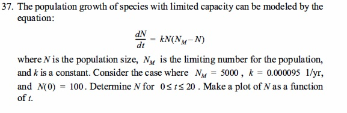

Simulation A – Population Dynamics
Logistic Model with Environmental Constraints.

Default Parameters: Initial Population = 100, Simulation End Time = 20 years, Step Size = 0.1 years.
Simulation B – Tumor Growth Analysis
Saturated Growth Model.
Default Parameters: Growth Rate α = 0.8, Saturation Capacity k = 60 mm², Exponent ν = 0.25, Initial Area A₀ = 1 mm², Simulation Duration = 30 days. (Fixed Step Size h = 0.1)
Simulation C – Projectile Velocity
Free Fall with Quadratic Air Resistance.

Default Parameters: Initial Velocity = 0 m/s, Simulation End Time = 100 s, Step Size = 0.25 s.